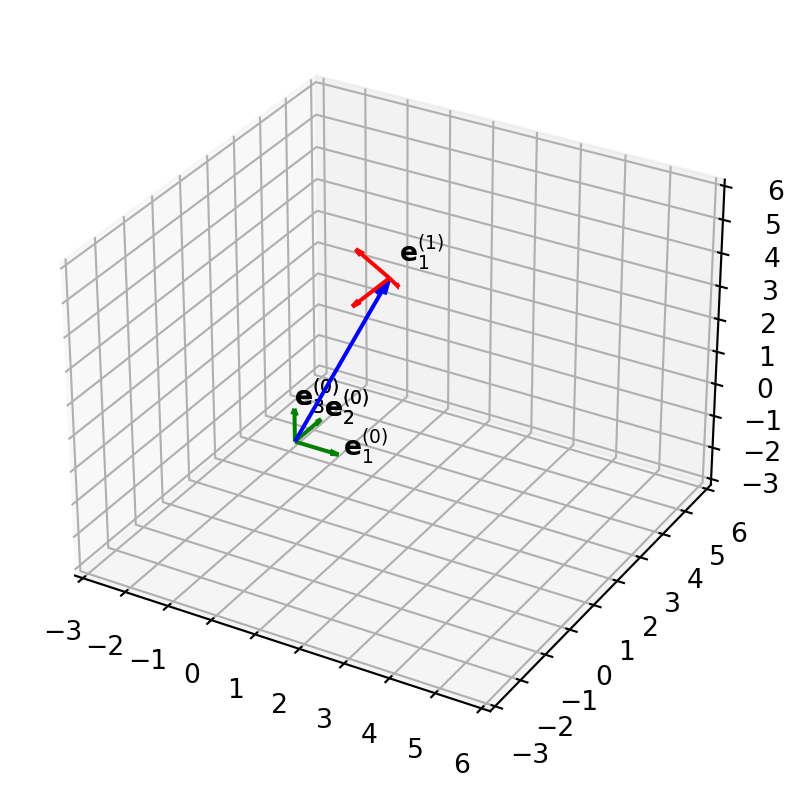

2 Kinematics: the description of motion
Motivation: describe the motion of a particle or rigid body in 3D space.
Kinematics is a fundamental branch of dynamics, focusing on the study of motion without considering the forces. It provides a framework for understanding and analyzing the motion of particles, objects, or systems in three-dimensional space. The motivation behind studying kinematics lies in its ability to describe and predtic motion, leading to applications in the controls or optimization of various systems. In Mechanical Engineering, the concepts play a crucial role in various fiels such as controls, robotics, biomechanics, and etc.
2.1 Introduction to Three Dimensional Linear Algebra
In the realm of practical applications and real-world scenarios, the study of motion necessitates a comprehensive understanding of three-dimensional space. As such, it becomes imperative to delve into the foundations of three-dimensional linear algebra. This branch of mathematics provides the tools and concepts needed to describe and analyze motion in a three-dimensional context. By grasping the principles of three-dimensional linear algebra, we gain the ability to navigate and comprehend the complexities inherent in the physical world, enabling us to formulate accurate models and predictions pertaining to dynamics. This foundational knowledge forms an integral part of any comprehensive dynamics book, allowing readers to unlock the fundamental principles underlying the motion of objects and systems in three-dimensional space.
2.1.1 Reference frame
Motion is described with respect to a reference frame. A reference frame consists of a reference point called the origin and three orthonormal basis vectors. We consider two types of frames:
Fixed frame, also known as an inertial frame, is a reference frame that remains stationary or moves with a constant velocity relative to an external observer or a point of reference. In a fixed frame, Newton’s laws of motion hold true, and the laws of physics are considered to be the same regardless of the frame’s position or orientation.
Moving frame, also known as a non-inertial frame or body-fixed, is a reference frame that is accelerating, rotating, or undergoing any other type of non-uniform motion relative to a fixed reference frame. In a moving frame, the laws of motion are not as straightforward, since additional forces may come into play due to the frame’s acceleration or rotation.
Definition 2.1 (Reference frame) A reference frame is a set of basis vectors and an origin. We will always be using a set of three orthonormal basis vectors. Notation: \[ ({\mathbf{e}_{1}^{(i)}}, {\mathbf{e}_{2}^{(i)}}, {\mathbf{e}_{3}^{(i)}}, \mathbf{r}_{A}^{(i)}), \] or to be concise \[ ({\mathbf{e}_{1}^{(i)}}, {\mathbf{e}_{2}^{(i)}}, {\mathbf{e}_{3}^{(i)}}) \]
where \({\mathbf{e}_{j}^{(i)}}\), \(j=1,2,3\) are the orthonormal basis vectors and \(\mathbf{r}_{A}^{(i)}\) is the origin, the superscript \(i\) is a label to keep track of multiple reference frames. By convention \(i=0\) is the fixed (inertial) frame.
Some of the special properties of the orthonormal basis vectors are that \[ \textbf{e}_{i} \cdot \textbf{e}_{j} = \delta_{ij} \] where \(i,j=1,2,3\)
and
\[ \textbf{e}_1 \times \textbf{e}_2 = \textbf{e}_3 \] \[ \textbf{e}_2 \times \textbf{e}_3 = \textbf{e}_1 \] \[ \textbf{e}_3 \times \textbf{e}_1 = \textbf{e}_2 \] These two properties are invariant of whichever frame one uses (“superscript-independent”) as long as the three basis vectors are orthonormal.
2.1.2 Vectors and Cross Product
In the context of kinematics, a vector contains information about the relative position and direction. A single vector can be expressed in infinitely many different ways depending on the choice of a reference frame. In other words, “coordinates” are “frame-dependent”.
Suppose we have a three dimensional vector \(\textbf{r}\) and a reference frame located at some arbitary origin \(\textbf{O}\) with three orthonormal basis vectors \({\mathbf{e}_{1}^{(0)}}, {\mathbf{e}_{2}^{(0)}}, {\mathbf{e}_{3}^{(0)}}\). Then the vector \(\textbf{r}\) can be expressed as following \[ \textbf{r} = r_1{\mathbf{e}_{1}^{(0)}} + r_2{\mathbf{e}_{2}^{(0)}} + r_3{\mathbf{e}_{3}^{(0)}} = \begin{pmatrix} {\mathbf{e}_{1}^{(0)}} & {\mathbf{e}_{2}^{(0)}} & {\mathbf{e}_{3}^{(0)}} \end{pmatrix} \begin{pmatrix} r_1 \\ r_2 \\ r_3 \end{pmatrix} \] where \(r_1, r_2, r_3\) are the “coordinates”. However, these “coordinates” need not be the same in other reference frames.
One of the most frequently used vector products in Dynamics is the cross product. Suppose we have some arbitary vectors \(\textbf{u}\) and \(\textbf{v}\) both expressed with respect to the same reference frame. \[ \textbf{u} = \Sigma_{i=1}^{3}u_i\textbf{e}_i \] \[ \textbf{v} = \Sigma_{j=1}^{3}v_j\textbf{e}_j \] Then the cross product between the two vectors proceed as follows \[ \textbf{u} \times \textbf{v} = (u_1\textbf{e}_1 + u_2\textbf{e}_2 + u_3\textbf{e}_3) \times (v_1\textbf{e}_1 + v_2\textbf{e}_2 + v_3\textbf{e}_3) \] \[ = (u_2v_3-u_3v_2)\textbf{e}_1+(u_3v_1-u_1v_3)\textbf{e}_2 + (u_1v_2 - u_2v_1)\textbf{e}_3 \] \[ = \begin{pmatrix} \textbf{e}_1 & \textbf{e}_2 & \textbf{e}_3 \end{pmatrix} \begin{pmatrix} u_2v_3 - u_3v_2 \\ u_3v_1 - u_1v_3 \\ u_1v_2 - u_2v_1 \end{pmatrix} \] \[ = \begin{pmatrix} \textbf{e}_1 & \textbf{e}_2 & \textbf{e}_3 \end{pmatrix} \begin{pmatrix} 0 & -u_3 & u_2 \\ u_3 & 0 & -u_1 \\ -u_2 & u_1 & 0 \end{pmatrix} \begin{pmatrix} v_1 \\ v_2 \\ v_3 \end{pmatrix} \]
Notice that the matrix containing the components of the \(\textbf{u}\) is skew-symmetric. In other words, a cross product operation can be seen equivalent to a left matrix multiplication of a skew-symmetric matrix. This is a key result that will be frequently used in subsequent chapters. Hereafter, we denote skew symmetric matrices with a tilde symbol and note that the transpose of a skew symmetric matrix is precisely the negative of itself. \[ \widetilde{\textbf{u}} = \begin{pmatrix} 0 & -u_3 & u_2 \\ u_3 & 0 & -u_1 \\ -u_2 & u_1 & 0\end{pmatrix} \] \[ \widetilde{\textbf{u}}^T = -\widetilde{\textbf{u}} \]
2.1.3 Rotation Matrices
Definition 2.2 (Rotation Matrix) A rotation matrix is a tool used to describe the transformation between different reference frames. It allows us to convert the coordinates of a point or a vector from one reference frame to another.
Consider two reference frames: Frame A and Frame B. The rotation matrix, denoted as \(\textbf{R}^{(a,b)}\), represents the rotational transformation from Frame A to Frame B.
Based on the notation that we are using, the rotation matrix from Frame B to Frame A would be written as \(\textbf{R}^{(b,a)}\).
\[ ({\mathbf{e}_{1}^{(b)}} {\mathbf{e}_{2}^{(b)}} {\mathbf{e}_{3}^{(b)}}) = ({\mathbf{e}_{1}^{(a)}} {\mathbf{e}_{2}^{(a)}} {\mathbf{e}_{3}^{(a)}}) \textbf{R}^{(a,b)} \] or in more compact notation, \[ \underline{\underline{\textbf{e}}}^{(b)} = \underline{\underline{\textbf{e}}}^{(a)}\textbf{R}^{(a,b)} \] where the double-underline notation indicates a reference frame matrix.
In this course, all our reference frames consist of orthonormal basis vectors. In other words, the reference frame matrices are orthogonal. Furthermore, 3 dimensional rotation matrices is an element of the SO(3). This leads us to another useful property that we will frequently make use of in subsequent chapters: \[ (\textbf{R}^{(a,b)})^{-1} = (\textbf{R}^{(a,b)})^T \] One must be cautious of the fact that \(\textbf{R}^{(a,b)}\) and \(\textbf{R}^{(b,a)}\) are different rotation matrices. In fact, one can easily show, using the relationship above, that \[ (\textbf{R}^{(a,b)})^{T} = \textbf{R}^{(b,a)} \]
2.2 Rate of change of basis vectors
Kinematics involves the examination of motion, which inherently involves systems that change over time. Understanding the fundamental principles of dynamics is centered around Newton’s Second Law. Therefore, it is crucial to have proficiency in expressing how rates of change can be articulated.
So far, we have looked at how reference frames are formulated and how they are related by a rotation matrix namely (FIGURE OF FRAMES HERE) \[ \underline{\underline{e}}^{(1)} = \underline{\underline{e}}^{(0)}\textbf{R}^{(0,1)} \]
The question one might ask is: what is the rate of change of reference frame (1) with respect to the reference frame (0)?
In future applications or examples, one might be forced to examine the rate of change with respect to a moving frame. However, as Newton’s 2nd Law retains its simplest form in inertial frame, it is logical to first examine how a moving frame changes with respect to a fixed frame in time.
Knuth (1984) for additional discussion of literate programming.
Tip with Title
This is an example of a callout with a title.
See Definition 2.1.
1.0000000000000002
1.0
1.0000000000000004
For example, see ?fig-plot.